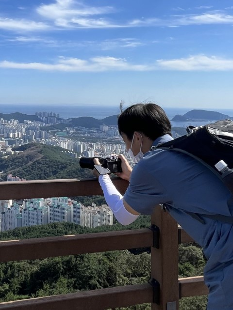
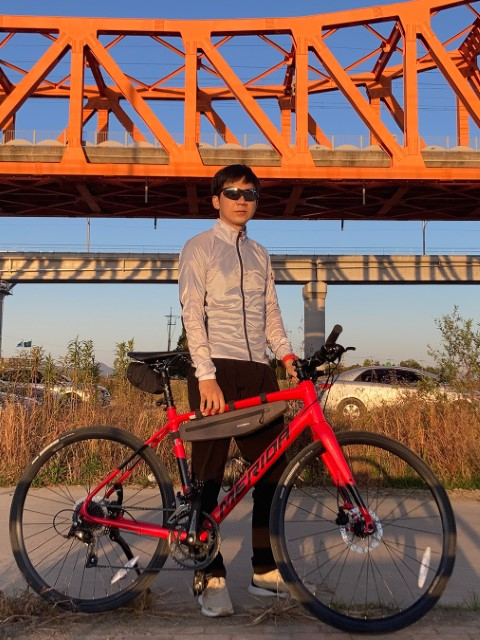
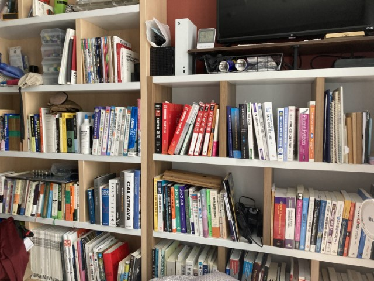

사진 촬영
풍경 사진 찍는 것을 좋아합니다. Canon EOS 500D로 시작해 지금은 Nikon Z30 미러리스를 쓰고 있어요. 📷

건축디자이너, 경관디자이너, 프롬프트 크래프터
인테리어 CAD 보조 아르바이트부터 건축 인턴십까지 여러 현장을 거친 건축 전공자입니다. 경관디자인 회사에서 일하며 소통과 협업의 중요성을 배웠고, 요즘은 새로운 기술을 익히는 데 재미를 붙였습니다. 열정과 끈기를 바탕으로 여러 분야에서 계속 성장하고 싶습니다.
건축 관련 기술뿐 아니라 인공지능 같은 최신 기술도 꾸준히 배우고 있습니다. ✏️
몇 가지 취미를 소개합니다. 🌞

풍경 사진 찍는 것을 좋아합니다. Canon EOS 500D로 시작해 지금은 Nikon Z30 미러리스를 쓰고 있어요. 📷

가끔씩 자전거를 탑니다. 자전거길 따라 논길 달리는 것도 좋아하고, 최근에는 산악자전거로 MTB 대회에 나가 본 적도 있어요. 🚴

책 사는 것을 좋아합니다. 관심 가는 책이 있으면 서점에 가서 직접 보고, 마음에 들면 사서 읽어요. 📖